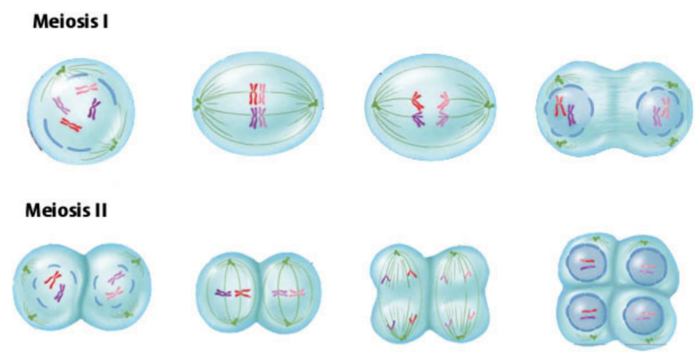
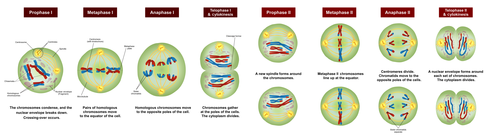
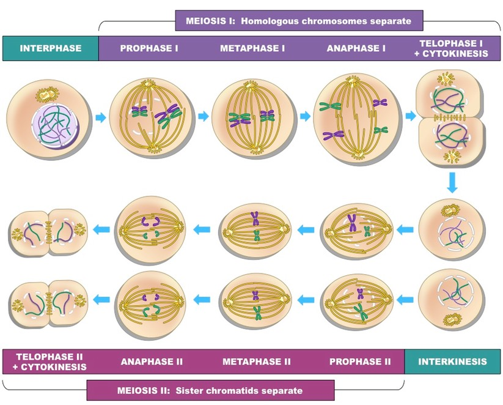

3.3 Lecture 6: Meiosis-2
3.3.1 Lesson outline
|  |
|---|
| meiosis illustration 1 |
|  |
|---|
| meiosis illustration 2 |
|  |
|---|
| meiosis illustration 3 |
- interphase
- Homologous chromosomes
- breaks
- middle
- Spindle
- homologous
- Sister chromatids
- two
- Sister chromatids
- Chromosomes; Nuclear membrane
- align
- pulled apart; opposite ends of the cells
- chromosomes
- four
- half
3.3.2 Homework
Multiple Choice Questions
1. A
2. C
3. D
4. D
Short Answer Questions
(6 points maximum) One point for each of the following:
- Correct description of meiosis (simply rephrasing the question earns no point)
- DNA replicates in interphase
- Homologous chromosomes pair in prophase I
- Spindles move chromosomes pairs to poles in anaphase I
- Two cycles/rounds of division in meiosis
- No additional replication before meiosis II
- Sister chromatids separate to poles in anaphase II
- 1 germ cell yields 4 gametes
Fill in the Blanks
1. Anaphase II
2. N/A
3. Metaphase I
4. Telophase II (not quite obvious)
5. Telophase I (not quite obvious)
6. N/A
7. Metaphase II
8. Prophase I
9. Prophase II
10. Anaphase I